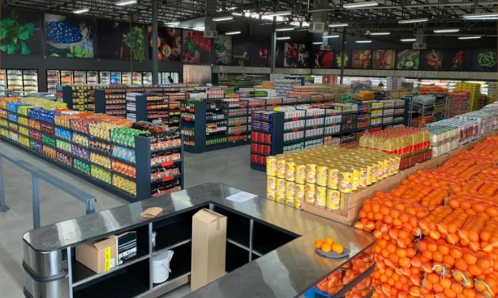

Johnny
Owner & CEOFruit Stop's founder and driving force, with a long-standing commitment to sourcing fresh, high-quality produce and delivering dependable value.
Fruit Stop has grown from a bold family venture into a trusted part of everyday life for shoppers across Pretoria.

Fruit Stop's story began in July 1999, when co-founders Joao De Canha—known as Johnny—and Joao Cavaleiro—known as John—set out to bring top-quality fruit and vegetables to the community.
The original Gezina premises had previously been a car dealership. With determination and a clear vision, that space was transformed into a neighbourhood fruit and vegetable store.
As the business earned the trust of local shoppers, Fruit Stop expanded into Silverton and Wonderboom while broadening its range far beyond fresh produce.
Each step reflects a continued focus on quality, convenience and local service.
Fruit Stop opens its first store in Gezina.
Fresh produce expands into groceries, meat, dairy, deli and more.
Fruit Stop grows into Silverton and Wonderboom.
Three stores continue serving Pretoria seven days a week.
Experienced team members help maintain Fruit Stop's standards for quality, organisation and customer service.
Fruit Stop's founder and driving force, with a long-standing commitment to sourcing fresh, high-quality produce and delivering dependable value.
An experienced manager with a strong understanding of seasonal produce, daily store operations and the importance of consistently stocked shelves.
Focused on maintaining high standards across store organisation, cleanliness, product knowledge and friendly customer service.
Products selected to help families enjoy better everyday meals.
Neighbourhood stores shaped by the people they serve.
Friendly assistance and a practical, convenient shopping experience.
Shop at Gezina, Silverton or Wonderboom—open seven days a week.